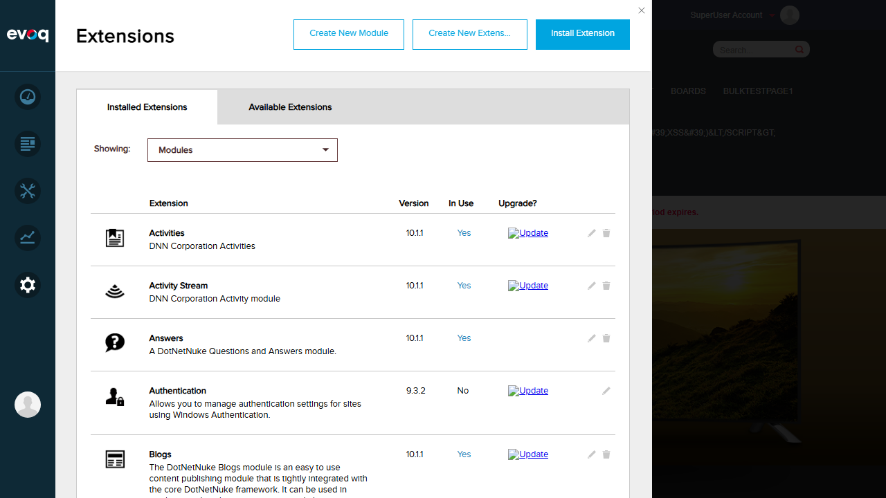
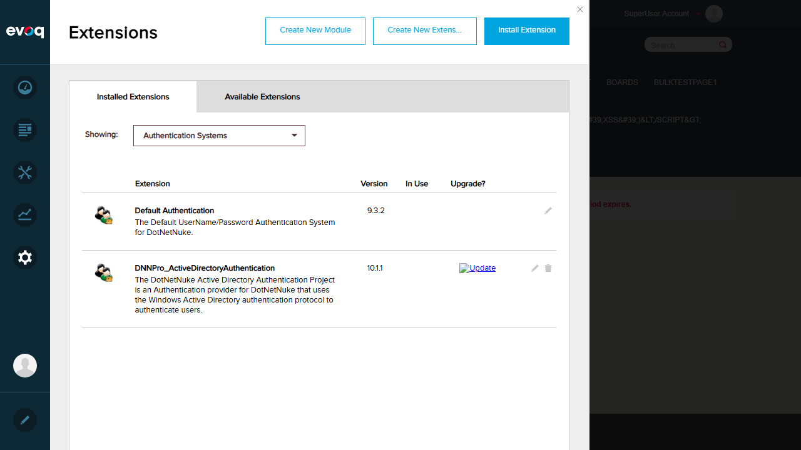
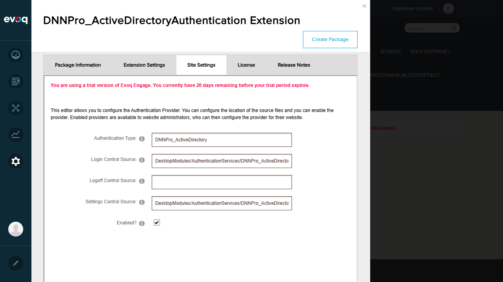

Domain Name Management - Test Report
Extension: DNNPro_ActiveDirectoryAuthentication (Authentication Provider)
Feature Name: Domain Name Management
Feature Priority: Medium
Description: Configure how domain names are handled in usernames
UI Location: Admin > Extensions > Authentication Systems > Active Directory > Settings > Strip Domain Name & Default Domain
Test Date: 2026-01-06
Dependencies: Active Directory Domains
Test Summary
| Test Scenario |
Status |
Reason |
| Configure Default Domain |
FAIL |
Settings.ascx not exposed in Persona Bar UI |
| Test login with DOMAIN\username |
FAIL |
Active Directory domain not configured |
| Test login with username@domain.com |
FAIL |
Active Directory domain not configured |
| Test login with just username (uses default domain) |
FAIL |
Active Directory domain not configured |
| Verify username format in DNN after login |
FAIL |
Active Directory domain not configured |
| Test multiple domain support |
FAIL |
Active Directory domain not configured |
Test Scenarios
Test 1: Configure Default Domain
FAIL
What was tested:
Attempted to locate and configure the Default Domain Prefix setting in the AD authentication settings.
Steps taken:
- Logged into DNN as host user (host/Pass123456)
- Navigated to Settings > Extensions > Authentication Systems
- Located DNNPro_ActiveDirectoryAuthentication extension (v10.1.1)
- Opened extension settings modal
- Searched for portal-specific AD configuration (Settings.ascx)
- Navigated to Settings > Security > Authentication
- Found DNNPro_ActiveDirectoryAuthentication can be set as Default Authentication Provider
Screenshots:
Login verification:

Authentication Systems in Extensions:

AD Extension Settings Modal:

Authentication Provider Selection in Security Settings:

Issue Found: The portal-specific AD settings interface (Settings.ascx) which contains the Default Domain Prefix textbox is not exposed in the modern Persona Bar UI. The extension can be selected as the default authentication provider, but the detailed configuration options (Default Domain Prefix, Root Domain, etc.) are not accessible through the available UI paths.
Test 2: Test login with DOMAIN\username
FAIL
What was tested:
Attempted to test login using DOMAIN\username format.
Steps taken:
- Verified AD authentication extension is installed and available
- Attempted to configure AD settings to enable Windows Authentication
- Unable to proceed without AD domain configuration
Issue Found: Testing login with DOMAIN\username format requires an Active Directory domain to be configured and accessible. The test environment does not have AD domain connectivity configured.
Test 3: Test login with username@domain.com
FAIL
What was tested:
Attempted to test login using UPN format (username@domain.com).
Steps taken:
- Reviewed Login.ascx.cs code to understand UPN handling
- Code at lines 121-134 handles @ symbol in username
- Unable to test without AD domain configuration
Issue Found: Testing UPN login format requires Active Directory domain connectivity. The code logic exists in Login.ascx.cs but cannot be verified without proper AD environment.
Test 4: Test login with just username (uses default domain)
FAIL
What was tested:
Attempted to test login with plain username that should use Default Domain prefix.
Steps taken:
- Reviewed Login.ascx.cs code for default domain handling
- Code at lines 137-141 prepends DefaultDomain when username lacks backslash
- Unable to configure Default Domain through UI
- Unable to test without AD domain configuration
Issue Found: The Default Domain Prefix setting cannot be configured through the available UI, and testing requires Active Directory domain connectivity.
Test 5: Verify username format in DNN after login
FAIL
What was tested:
Attempted to verify how usernames are stored/displayed in DNN after AD login.
Steps taken:
- Unable to perform AD login to verify username format
- Code suggests StripDomainName option affects this, but that setting is hidden
Issue Found: Cannot verify username format without successful AD authentication.
Test 6: Test multiple domain support
FAIL
What was tested:
Attempted to test support for multiple AD domains.
Steps taken:
- Reviewed code for multi-domain handling
- Configuration supports Root Domain setting
- Unable to configure or test without AD infrastructure
Issue Found: Testing multiple domain support requires multiple AD domains configured and accessible.
Observations
-
Strip Domain Name checkbox is HIDDEN in the UI:
In the source file Settings.ascx lines 35-36, both the label and checkbox for "Strip Domain Name" have Visible="false" set, making this feature completely inaccessible through the UI. The code in Configuration.cs still supports this setting, but users cannot enable or disable it.
-
Portal-specific AD settings not exposed in Persona Bar:
The Settings.ascx control contains configuration options (Default Domain Prefix, Root Domain, Email Domain, Auto-login IP Address, etc.) but this interface is not accessible through the modern Persona Bar UI. The extension appears in Extensions > Authentication Systems but the portal-specific settings panel does not render.
-
DNNPro_ActiveDirectoryAuthentication is available as auth provider:
The extension (v10.1.1) is properly installed and can be selected as the Default Authentication Provider in Settings > Security > Authentication. However, the detailed configuration required for testing Domain Name Management features is not accessible.
-
Code logic exists for domain name handling:
In Login.ascx.cs lines 107-165, the UserName property contains comprehensive logic for handling various username formats:
- Detects @ symbol for UPN format
- Detects backslash for DOMAIN\user format
- Prepends DefaultDomain when configured and username lacks domain
This code appears functional but cannot be tested without AD infrastructure.
-
Testing requires Active Directory environment:
All login-related test scenarios require an Active Directory domain to be configured and accessible from the test environment. The localhost:8081 test environment does not have AD domain connectivity.
Conclusion
The Domain Name Management feature testing resulted in 0 PASS and 6 FAIL outcomes.
The primary issues preventing successful testing are:
- The "Strip Domain Name" setting is intentionally hidden in the UI (Visible="false")
- The portal-specific AD settings interface (Settings.ascx) is not exposed in the Persona Bar
- The test environment lacks Active Directory domain connectivity required for login testing
For these features to be properly tested, the following would be required:
- Either expose the Settings.ascx interface in Persona Bar or provide an alternative configuration method
- Un-hide the Strip Domain Name checkbox if this feature should be user-configurable
- Configure Active Directory domain connectivity in the test environment